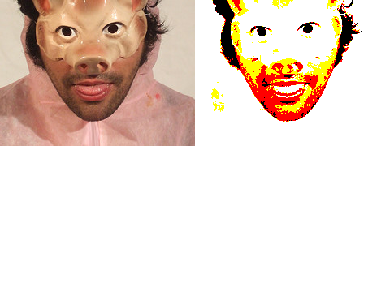

| Name | threshold() | ||||||
|---|---|---|---|---|---|---|---|
| Examples | import hypermedia.video.*; OpenCV opencv; size( 480, 360 ); opencv = new OpenCV( this ); opencv.loadImage( "eniarof.jpg" ); image( opencv.image(), 0, 0 ); // show original opencv.threshold(80); // filtering out pixels > 80 to 255 image( opencv.image(), 240, 0 ); // show the result |
||||||
| Description | Apply fixed-level threshold to the current image.
This method applies fixed-level thresholding to single-channel array. It is typically used to get bi-level (binary) image out of grayscale image or for removing a noise (filtering out pixels with too small or too large values). About types of thresholding
|
||||||
| Syntax | threshold(value, max, type); |
||||||
| Parameters |
|
||||||
| Return | float | ||||||
| Usage | Application | ||||||
| Related |